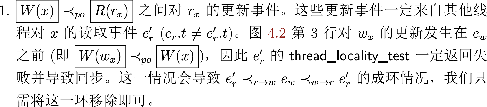
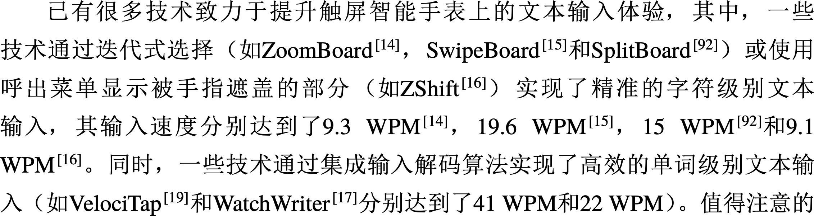
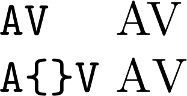

WARNING
Formal Methods 部分的论文难度急剧提升
- 请大家花足够时间仔细阅读
- 准备 talk 的目标：尽可能把没有读过论文的同学讲懂
注意 A2 (deadline 已过), PA1 和 PA2 的 deadline
- 之后进入 artifact 准备环节
本讲概述
专业人士都使用 LaTeX 排版论文
- Microsoft Word 对排版的控制实在是太少了，以至于经常需要用比较麻烦的 hacking 解决 fine-tuning
- 做个完美主义者——这会让读者感到你对你的 paper 是负责任的
本讲概述
- 基本排版：字、词、公式、段落
- 图：TikZ/pgfplots
- 表
字符
字体：为什么 LaTeX 文档看起来更好？
字体的故事：Sans Serif vs. Serif
- Helvetica/Arial/微软雅黑 vs. Times/Crimson/宋体
- 纪录片：Helvetica
- Web 时代的变革
- Web Fonts (网站：Voces/Crimson Text/Inconsolata)
一些模板使用的字体
- acmart: Libertine
- LaTeX 默认：Computer Modern Roman (CMR)
- $\textrm{Computer Modern Roman}$
字体：中英文混排
即便用了 font weight 更大的宋体，Times 依旧太粗了，抢夺了阅读的焦点


字体：变化
在什么时候使用什么形式？

词
连字
Ligatures
- 代码有时使用带连字的字体 (Fira Code)
- 现代排版系统支持 fi or ff 等的连字
- 这是为什么 pdf 复制出的文字不正确
Kerning
根据字符调整间距 (TeX 系统已经自动搞定了)

TeX 系统对所有类型的 spacing 都有控制
- 在你对 spacing 感到不满意时，可以随意精调
- 你应该看到了 Knuth 对完美的执着 (请移步 The TeXbook)
数学公式
TeX 是为科技排版而设计的
美观的公式让人惊叹

(但也有巨大的手工 tuning 的成本)
- 不美观的公式令读者浑身难受
数学公式 (cont'd)
遵循一般的数学规范 (算法不是程序)
- $History.append(nextState(currentState));$
- $H \leftarrow H :: \delta(\sigma)$
- 你有很多符号可以选择 (有约定俗成的含义)
- 希腊字母 $\alpha$, $\beta$, $\varepsilon$, ..., $\Delta$, $\Phi$, ...
- 大写/小写/花体/粗体 $M$, $t$, $\mathbf{X}$, $\mathbb{N}$, $\mathcal{F}$
- 带含义的符号 $\prec$, $\succ$, ...
- 你有很多符号可以选择 (有约定俗成的含义)
texdoc symbols
小心地用名字
- $t_{next} \leftarrow f(x)$
- $t' \leftarrow f(x)$
- 多看看 PL 领域的论文
段落
断字
有时候断字很令人讨厌……TeX 有一套相当复杂的文字处理系统
- 很多时候，用
\-就可以 hack 了 \hyphenation,\babelhyphenation可能有用- 面向 Web 编程

For Those Picky Guys
Use microtype!
- subliminal refinements towards typographical perfection

Quick quiz:
- 用什么样的算法实现排版 (word wrap problem)？
LaTeX 排版：Fun Facts
LaTeX 排版是迭代算法
- 每一轮，根据上一轮计算出的结果 (aux 等) 计算出当前的结果
- 所以 fresh build 首次编译会得到没有引用的文档
- 提交文档一定小心，没有 reference 就会被 desk reject
所以可能需要多轮才能得到 fixed point
- table of contents：空白 → 正确的 TOC → 正确的 TOC 页码
- 可以构造出永远得不到 fixed point 的文档
图
为什么要画图？
占用一大块面积，帮助读者直观地理解大量的内容
- 图 (非线性结构) vs. 文字 (线性结构)
- 能够使用 visual signals 辅助理解
注意
框图一定要提供足量的信息 - 不要：列几个大框，里面几个字；线性逻辑也能表达好
plotting 要用好空间 - 尽可能展示更多实验数据 (error bar 等)
figure + caption 应做到 self-contained - 使读者快速能通过图理解

表
为什么要列表？
陈列某些有一定结构的数据，例如实验对象、实验结果等
注意
使表格的内容更 readable - 尽量不要贴一大堆数据，让读者自己找
- 使用辅助的 visual signals 帮助理解表格内容
table + caption 应做到 self-contained - 再一次，尊重你的读者
- (minor) 精调表格的间距，使表格排版美观
总结
LaTeX 是一门编程语言
用好各种语言特性
- 写出易读、可维护的代码
- 良好的代码风格
- 文件分割 (
\input) 等 - 宏的使用
\newcommand{}
一些有用的宏包
- microtype
- xspace
- cleveref
End.
(严格是好事：你的论文会让审稿人读起来更舒适)
(然而审稿人还是会千方百计拒绝你)